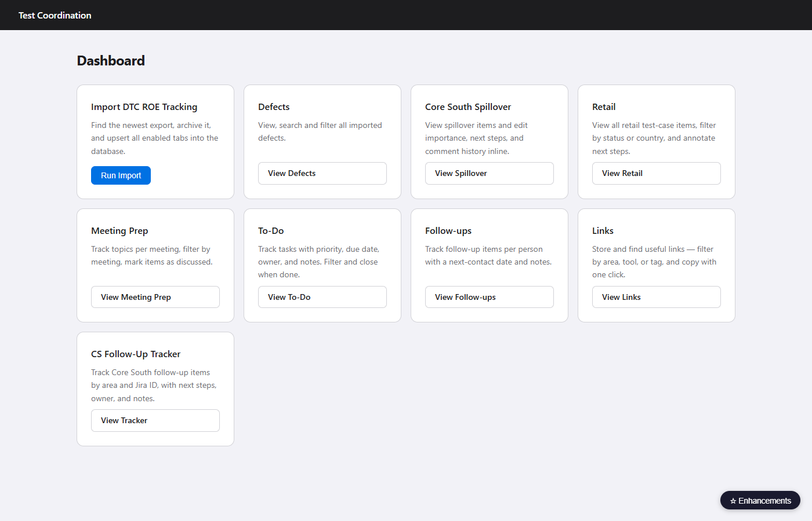
The home screen. A card grid gives one-click access to every module. The Run Import button is the only action here — it reads the latest Excel file, archives it, and upserts all three tabs into the database.
Cards visible
- Import DTC ROE Tracking
- Defects
- Core South Spillover
- Retail
- Meeting Prep
- To-Do
- Follow-ups
- Links
- CS Follow-Up Tracker
Notes
- The "☆ Enhancements" floating button (bottom-right) is visible on every page
- No persistent sidebar — navigation is card-based from here
- The "Test Coordination" header title is a link back to this page from anywhere
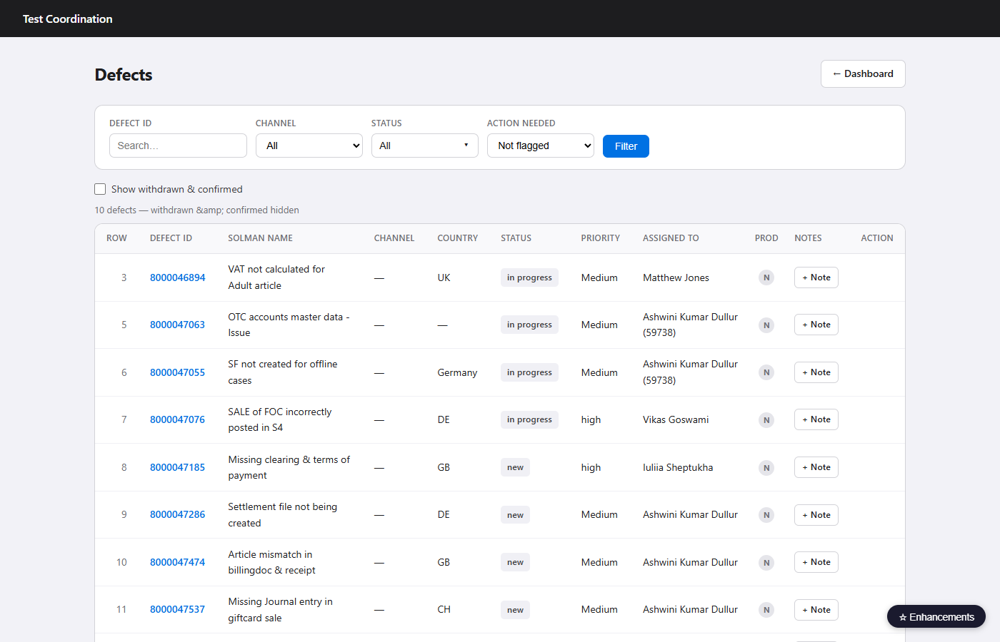
Filterable table of all imported defects. Statuses "Withdrawn" and "Confirmed" are hidden by default and revealed with the Show all toggle.
Filters
- Search by defect ID
- Channel dropdown
- Status multi-select
- Action needed yes / no
- Show all toggle (reveals hidden statuses)
Row actions
- Click row → Defect Detail
- Add note shortcut per row
Columns
- Row · Defect ID · Channel · Country · SolMan Name · Status · Priority · Assigned To · Notes
Defect Detail — notes & screenshots
- Full notes log per defect: heading + text + timestamp
- Per-note Edit and Delete
- 📷 Add screenshot button per note — file picker for PNG/JPG/GIF/WEBP
- Ctrl+V pastes a Snipping Tool screenshot into the last-hovered note
- Thumbnails shown inline; hover to reveal ✕ delete button
- Files stored in
data/uploads/
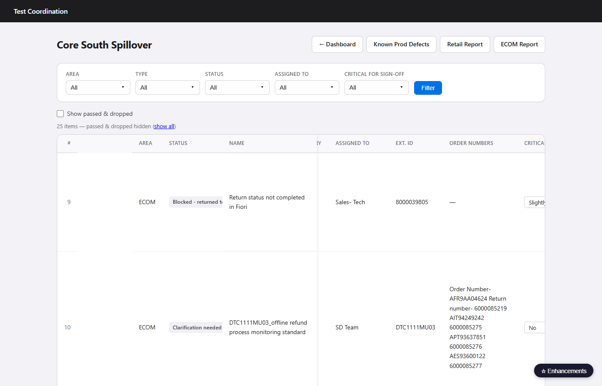
Horizontally scrollable table with a frozen left pane. All annotation editing happens inline — no detail page exists. AJAX saves on every field change.
Filters
- Area Type Status Assigned To Critical (all multi)
- Show passed & dropped toggle
Inline edits (AJAX — no page reload)
- Importance for sign-off
- Next step
- Comment for sign-off
- Sign-off group
- Critical for sign-off
- Comment history popup (timestamped log)
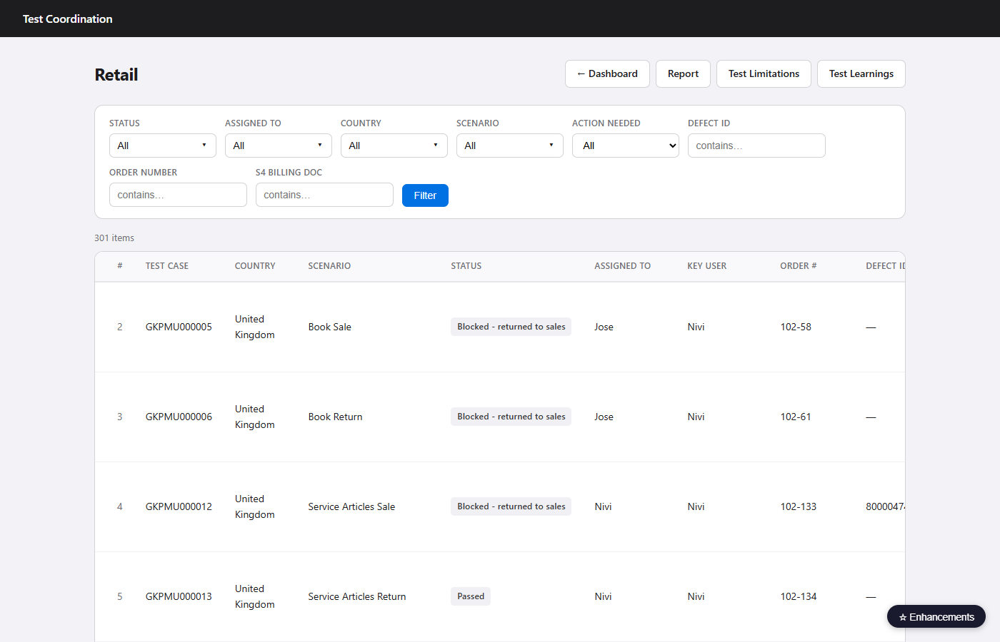
Filterable table of all retail test-case rows. Three free-text search boxes let you find rows by defect ID, order number, or billing document. Next step edits inline; comment history in a per-row popup.
Dropdown filters
- Status Assigned To Country Scenario (all multi)
- Action needed
Free-text searches
- Defect ID ref
- Order number
- S4 Billing document
Inline / row actions
- Next step inline edit (AJAX)
- Comment history popup (AJAX)
- Click row → Retail Detail
- → Report and → Sign-Off Report header links
Retail Detail — notes & screenshots
- Full notes log per test case: heading + text + timestamp
- Per-note Edit and Delete
- 📷 Add screenshot button per note — file picker for PNG/JPG/GIF/WEBP
- Ctrl+V pastes a Snipping Tool screenshot into the last-hovered note
- Thumbnails shown inline; hover to reveal ✕ delete button
- Files stored in
data/uploads/
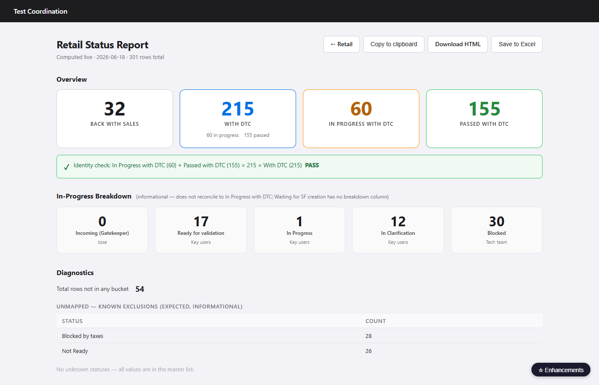
Live bucket counts computed by mapping raw status values to named
buckets defined in config/status_mappings.yaml. Two export options:
append a row to an Excel log, or download a standalone HTML snapshot.
Buckets
- Back with Sales
- With DTC
- In Progress with DTC
- Passed with DTC
- Incoming (Gatekeeper)
- Ready for Validation
- In Progress
- In Clarification
- Blocked
Actions
- Save to Excel — appends row to
output/retail_report_log.xlsx - Download HTML — saves a dated standalone snapshot
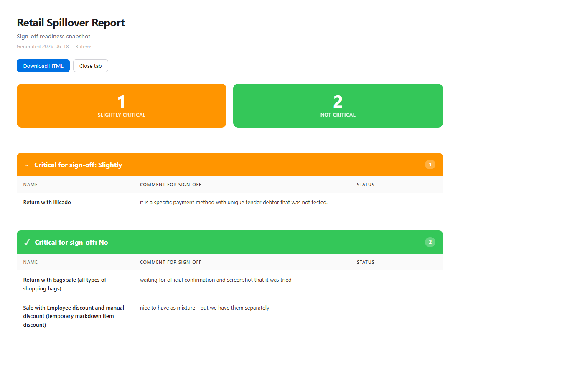
Printable view of Retail spillover items grouped by Critical for sign-off
value (Yes / Slightly / No / Not set). Excludes ECOM and Omni areas.
A matching ECOM/Omni version lives at /report/ecom and adds a Known
Production Defects section.
Sections
- Critical: Yes
- Critical: Slightly
- Critical: No
- Not set
Each item shows
- Name · Type · Country · Area · Status · External ID
- Importance · Next Step · Comment for sign-off · Sign-off group
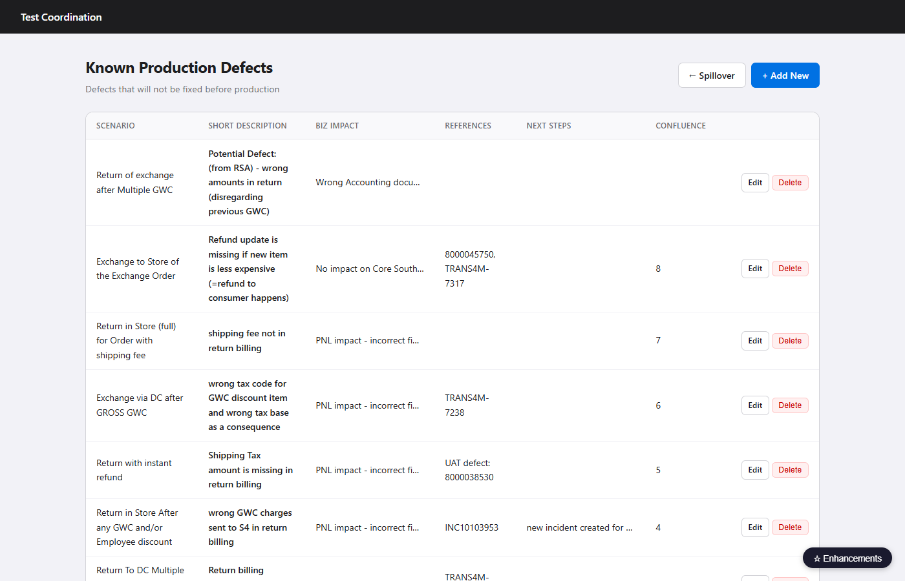
Hand-maintained register of known defects in production. Used to populate the "Known Production Defects" section of the ECOM sign-off report. Each entry has a full detail / edit page.
Fields per entry
- Technical Key · Short Description · Scenario
- Description · Business Impact · Numbers
- References · Next Steps · Comments · Confluence link
Actions
- + New
- Click row → Detail / Edit
- Delete (on detail page, AJAX)
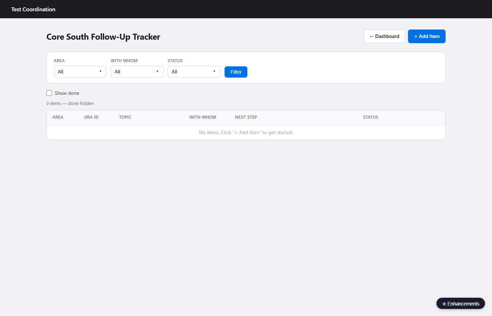
Richer follow-up tracker specifically for Core South sign-off work. Supports area, Jira ID, description, and next step. Status can be cycled inline. Done items hidden by default.
Filters
- Area With Whom Status (multi)
- Show done toggle
Inline actions
- Status cycle open → in_progress → done
- Notes popup per row
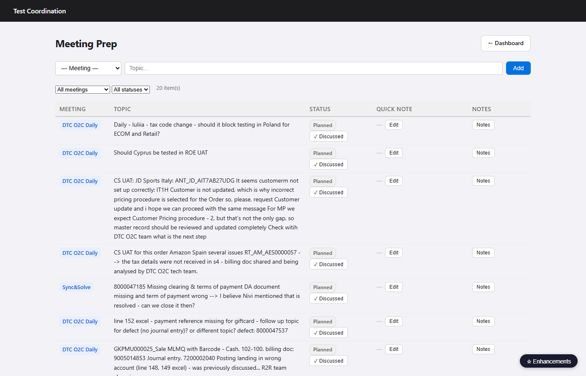
Agenda topic tracker per named meeting. Topics are added with a quick inline form; status changes in-row. No detail page — everything lives here.
Meetings
- Balazs · GPO · Sync&Solve · DTC O2C Daily · Sales ECOM daily · Other
Status values
- planned · discussed · parked · dropped
Inline actions
- Status change
- Inline note per item
- Notes popup per item
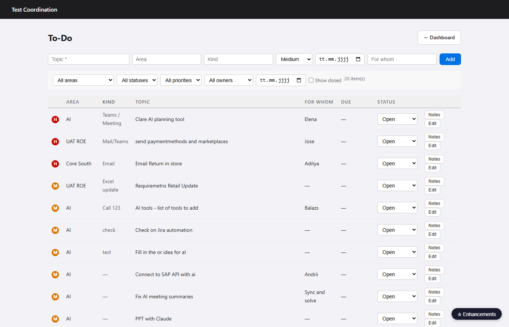
General task list with priority, kind, due date, and owner. Sorted by: blocked → in_progress → open → closed, then by priority and due date. Overdue dates shown in red.
Filters
- Area Status Priority For Whom Due Date
- Show closed toggle
Status values
- open · in_progress · blocked · closed
Inline actions
- Status change
- Edit row (inline modal)
- Notes popup
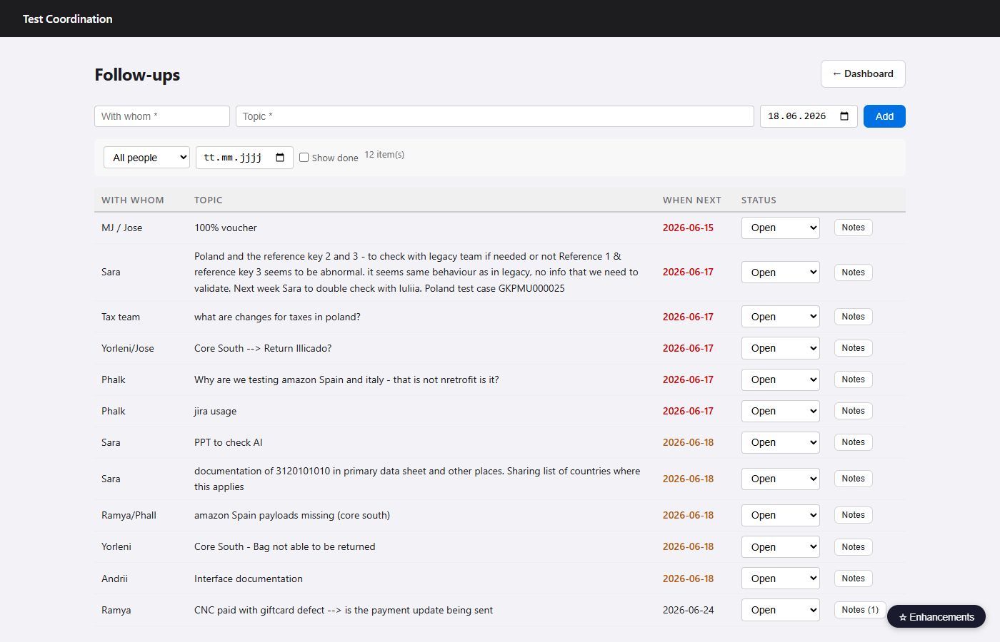
Lightweight "chase" list — who to follow up with, on what, and by when. Done items hidden by default. Sorted by in_progress first, then open, then date.
Filters
- With Whom When Next
- Show done toggle
Status values
- open · in_progress · done
Inline actions
- Status change
- Notes popup
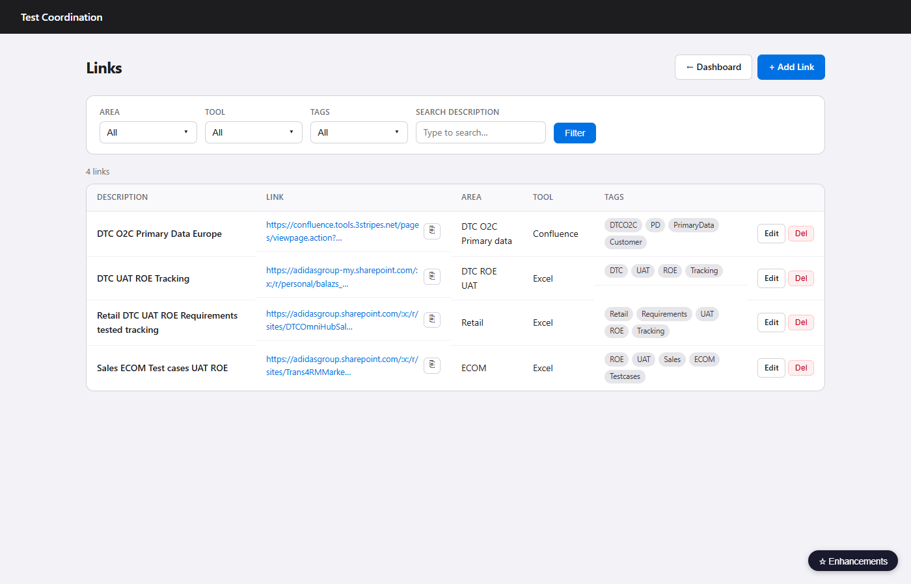
Personal URL bookmark store. Filter by area, tool, or tag. One-click copy to clipboard. Each link opens in a new tab.
Filters
- Area Tool Tag (multi)
- Search by description text
Per-link actions
- Copy URL (clipboard)
- Edit → Link Detail
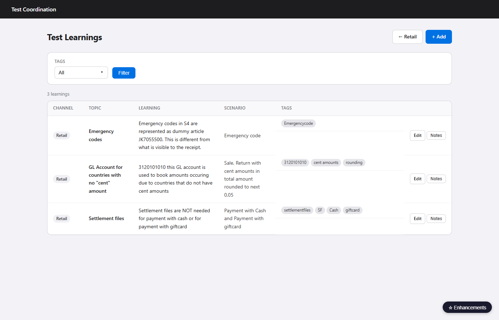
Log of observations and lessons learned during UAT test execution. Grouped by channel → topic → learning. Per-row notes popup.
Filters
- Channel Tag (multi)
Actions
- + New (pre-fills channel from filter)
- Click row → Detail / Edit
- Notes popup per row
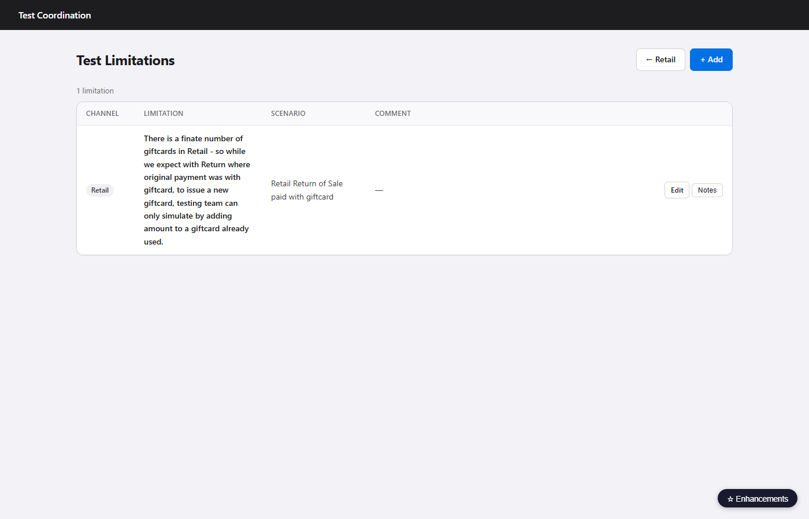
Register of known gaps in test coverage or constraints that affect sign-off confidence. Sorted by channel → limitation text.
Filters
- Channel (multi)
Actions
- + New
- Click row → Detail / Edit
- Notes popup per row